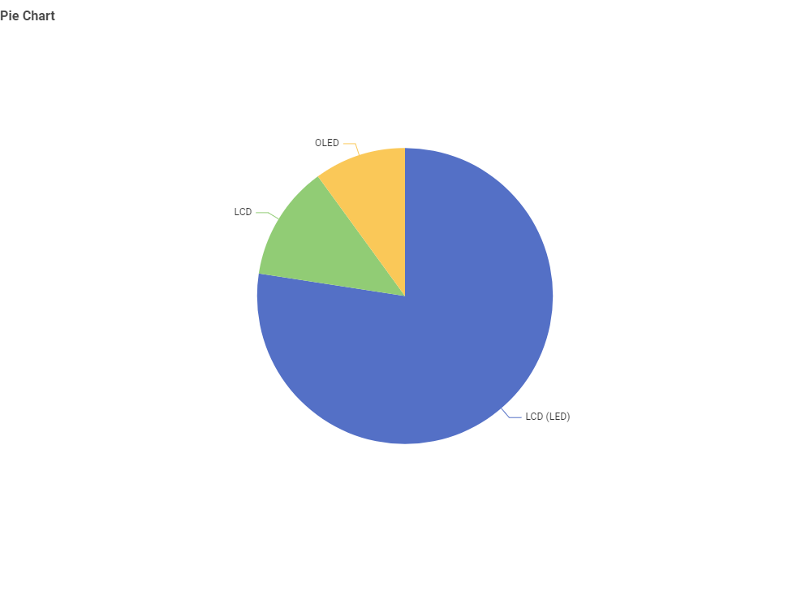

Televisions • Energy Insights
Q1. What TV screen technologies are available and which are most frequent?
Answer: Available technologies include LCD (LED), LCD, and OLED. The most frequent in the dataset is LCD (LED).
Q2. What screen sizes are available, and which are most frequent?

Answer: Common buckets include 22–24, 32–33, 43–44, 55–56, 65–66, 75–76 inches, plus an “Other” bucket. The most frequent size is 55–56 inches.
Q3. Which brands have the greatest number of different models?

Answer: LG has the largest number of models in the dataset.
Q4. Which screen technology uses the least power?

Answer: LCD shows the lowest average active power among the listed technologies.
Q5. What is the relationship between screen size and power use?

Answer: As screen size increases, average power usage generally increases.
Q6. What is the relationship between star rating and screen size?
Answer: Higher star ratings tend to be associated with larger average screen sizes in this dataset.
Conclusion
Across the six questions, the dataset suggests a clear pattern: mainstream TVs are dominated by LED/LCD, mid-range sizes (around 55″) are most common, and average power use generally rises with screen size. Technology choice still matters—some panels tend to draw less power at comparable sizes—and energy star ratings help compare efficiency across models.